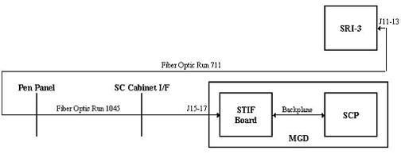

Proprietary to General Electric Company
Direction 5440000, Rev# 5
Signa HDxt Service Methods
Module Version 1.0, Version Date 4/26/07
Proprietary to General Electric Company |
Diagnostics >> Peripherals >> SRI Data Paths
This diagnostic verifies that the SRI is responding to commands sent to it from the SCP and that the response from SRI is received by SCP.
SRI
SCP
STIF
MGD
None
Illustration 1: SRI Block Diagram

The test executes the following steps:
The SCP sends a command and data packet to the SRI.
The SRI modifies the data portion of this packet and sends it back to the SCP.
The SCP verifies that it received the correct data.
If this test fails, these are the possible reasons:
The SRI is bad or powered off.
The plastic fiber cables between the MGD chassis and SRI are disconnected or broken.
The optical repeater in the pen panel is defective or in loopback mode.
The STIF board is defective.
The SCP board is defective.
This test is similar to the SRI Streamed Loopback test with the exception that this test sends only one test data byte.
None